本报告是原技术报告的补充分析，不重复原报告已经给出的任务背景、数据协议、TSE 网络结构与主 EER 结果。它只回答三个问题：
关键数字：EER 8.391 → 10.113 → 4.892；target 0.422 → 0.391 → 0.471；同句 embedding 漂移 0.820 → 0.714 → 0.816（Noisy → 原方法 → TSE，0 dB）。完整四路对比表见 4.1。
本报告不重复：任务背景与验收要求、3D-Speaker 数据与 trial 协议、ERes2Net 三后端、TSE 的训练细节、主 EER 交付大表——这些均见原技术报告《多条件中文声纹识别与噪声鲁棒性增强》。
原技术报告《多条件中文声纹识别与噪声鲁棒性增强》已经完整给出了任务背景、3D-Speaker 数据与 trial 协议、ERes2Net 三后端、TSE 的网络结构与训练方法，以及主 EER 交付大表。这些内容本报告不再重复；需要时请直接查阅原报告对应章节。
| 原报告已有（本报告不重复） | 本补充报告新增 |
|---|---|
| 任务目标、验收线、数据与噪声协议 | clean / Noisy / 原 FullSubNet+ / TSE 四路同句对比 |
| ERes2Net 三后端、注册/trial 协议、EER/minDCF 定义 | embedding 漂移、target/gap/d′ 的逐句分析 |
| TSE 的 FiLM 结构、四项损失、训练与消融 | SI-SDR / 全局 SNR / VAD-SNR / PESQ / STOI 新增指标 |
| 主 EER 交付大表与 claim 口径分析 | “为什么通用降噪会让 EER 变差”的机理分析 |
| 论文/答辩用的主结果与结论 | 时频/谱形证据、结果查看索引、面试口径 |
原 FullSubNet+ 是一个无注册条件的通用降噪器：它把带噪语音往“clean 波形”方向重建，但不负责“保留谁”。在这批跨设备中文语音上，它确实让波形更接近 clean（SI-SDRi +8.59 dB、STOI +0.096、PESQ +0.584），却把 ERes2Net 的说话人 embedding 推离了 clean 的说话人流形（同句余弦 0.820 → 0.714），导致 target 分数下降（0.422 → 0.391）、target−nontarget gap 收窄（0.371 → 0.332）、EER 从 8.391% 升到 10.113%。
注册条件化 TSE 的波形指标并不全面占优（SI-SDRi +7.62 dB、STOI 0.739，均略低于原方法），但它的 embedding 留在说话人流形附近（余弦 0.816），target 分数升到 0.471，EER 降到 4.892%。这说明：“降噪指标更好”不等于“声纹前端更好”；声纹验证需要的是身份保持，不是波形保真。
本报告沿用原报告的 3D-Speaker 跨设备中文测试集、clean 注册、官方 1,378,206 条 trial、ERes2Net-large 后端与 EER/minDCF 定义；这些协议细节与数据划分见原报告第 2–3 章，主 EER 大表见第 6 章，本文不再重复。TSE 的网络结构、FiLM 注入与四项损失见原报告第 5 章；本文只在第 5 节解释“为什么它能保住 embedding”，不重新介绍模型。
| 条件 | 具体内容 | 本报告用途 |
|---|---|---|
| Clean | 干净测试语音，作为参考上界 | PESQ/STOI 的参考、embedding 漂移的锚点 |
| Noisy 0 dB / −5 dB | clean + 噪声，输入混合 SNR 为 0 / −5 dB | 对照基线；−5 dB 只补充 EER 与全局 SNR |
| FullSubNet+（原方法） | 通用 cIRM 降噪；无注册条件；输出峰值归一化到 0.8 | 失效分析的主角 |
| TSE（现有方法） | 注册条件化 FullSubNet+；FiLM + 说话人保持 + 难负原型抑制；r5 版 | 身份条件化的对照 |
两个前端后接同一个冻结的 ERes2Net-large；因此 EER/embedding 差异来自前端增强后的语音，而不是后端变化。原方法的 checkpoint、增强 wav、embedding 与 TSE 的对应产物路径见附录 A；所有数字均来自这些原始产物，没有重训或重跑降噪。
| 子集 | 规模 | 用途 |
|---|---|---|
| 全部测试句 | 8,507 条 / 1,378,206 trial | EER、target、gap、d′、embedding 漂移 |
| 随机子集 | 120 条（种子 2026） | SI-SDR / 全局 SNR / VAD-SNR / PESQ / STOI / 谱形统计 |
| 展示样本 | 5 条 | 试听、时频图、embedding 轨迹、逐句指标 |
| PESQ-SNR 扫描 | 20 条 | 解释 0 dB 下 PESQ 的绝对量级 |
EER、minDCF、FAR/FRR、trial 协议在原报告中已有完整定义与主结果，本文不重复。下面只列本报告新增或重点使用的指标：它们回答的是“增强后的语音在信号、感知、身份三个层面发生了什么”，而不是重新评价主系统。
ERes2Net 把每条语音映射成 512 维单位向量。两个 embedding 的余弦相似度衡量“像不像同一个人”：
对测试语音 t，用同说话人的 clean 注册语音得到注册 embedding 均值 eenr，target 分数为 st = cos(et, eenr)。同时把同句在 clean 与增强条件下的 embedding 做余弦，得到 embedding 漂移 dt：
target 分数越高，说明越像注册者；漂移越接近 1，说明增强后 ERes2Net 仍把这句话放在原来的说话人位置。两者一个看“注册相似度”，一个看“增强把 embedding 挪了多远”，本报告同时报告。
SI-SDR 把估计信号 ŝ 分解为“clean 的最优缩放副本 + 残差”：
SI-SDR 是尺度不变的：整体音量不影响数值；残差 e 包含残余噪声、语音失真、增强伪影与对齐误差。对纯加噪输入，SI-SDR 近似输入 SNR；对增强后，它衡量“离 clean 有多远”。SI-SDRi 是相对带噪输入的提升，单位 dB，越高越好。
输入混合 SNR 是 clean 与噪声的能量比：
对增强后的信号，直接算“clean 能量 / 残差能量”会遇到增益陷阱：原 FullSubNet+ 把输出峰值归一化到 0.8，整体增益比 clean 高约 20 dB；不匹配电平会得到无意义的负 SNR。因此本报告先把增强输出缩放到与带噪输入相同的整体 RMS，再算：
其中 β = ‖x‖2 / ‖ŝ‖2。这样带噪基线就是它原本的输入 SNR（0 dB 数据实测 0.16 dB，−5 dB 实测 −4.53 dB），增强后的数值与它同电平可比。报告中的“全局 SNR 提升”均指这个 ΔSNR。
先用帧能量：
用 clean 的帧能量选出语音帧 S（能量最高 60%）与噪声帧 N（最低 20%），再在同一信号内算语音帧平均功率与噪声帧平均功率之比：
它衡量“语音段相对噪声段高多少”，对噪声底抑制敏感，但不惩罚语音失真；因此通常比全局 SNR 高很多。正确用法是在同一定义下比较不同前端，例如原方法 20.69 dB、TSE 13.43 dB，而不是拿它和 0 / −5 dB 直接换算。
PESQ 是 ITU-T P.862 的全参考感知质量指标，16 kHz 版本为 P.862.2（PESQ-WB）。流程是：电平对齐 → IRS 滤波 → 时间对齐 → Bark 域感知变换 → 对称/非对称扰动 → 聚合 → MOS-LQO 映射。可用下面的框架理解：
LX、LY 是 Bark 频带响度；Dsym 是对称扰动，Dasym 是对“参考有、待测没有”的成分加罚；𝒜 是时间/频带聚合，fMOS 是标准映射。精确常数由 ITU-T P.862 规定，没有简单闭式公式。
PESQ 范围约 −0.5–4.5（本报告用官方 pesq 0.0.4，clean-vs-clean 为 4.644），而且非线性：1.3 → 1.9 不是“28% → 41%”。0 dB 下 PESQ 1.3–2.0 是正常量级；本数据 20 dB 也只有 3.18。请看同条件下的相对提升，不要拿它对 clean 的 4.644 做百分比。
STOI 在 1/3 倍频带上比较短时包络的归一化相关：
范围 0–1，越高越好；比 PESQ 更“线性”、更少饱和，但同样衡量可懂度/包络保真，不是说话人身份。标准实现还会对相关值做裁剪/归一化，具体以原文和 pystoi 为准。
d′ 衡量 target 与 nontarget 两个分数分布的分离度：
d′ 越大，两个分布越分开。shape RMSE 用 80 维 log-mel 谱形衡量增强后“精细谱包络”离 clean 多远：
其中 Ω 是 clean 的活跃时频点，Δ̄ 是整体偏移；去掉偏移后只看谱形。shape RMSE 越低，谱形越接近 clean；它和 embedding 漂移有较强相关性（本报告 360 个“语句×条件”点 r = −0.54），是解释“为什么声纹会坏”的中间层证据。
| 指标 | 衡量什么 | 能否与输入 SNR 直接比 | 本报告用途 |
|---|---|---|---|
| target / gap / d′ | 注册相似度与分布分离度 | 否 | 验证层面的直接证据 |
| embedding 漂移 | 增强后 embedding 离 clean 多远 | 否 | 解释“为什么 EER 变差” |
| SI-SDRi | 尺度不变的全参考失真比 | 带噪时近似；增强后不是 | 信号保真 |
| 全局 SNR Δ | 与输入同电平后的残差比 | 是（本文定义） | 回答“SNR 提升多少” |
| VAD-SNRi | 语音帧/噪声帧功率比 | 否（绝对值不可比） | 噪声底抑制 |
| PESQ-WB / STOI | 感知质量 / 可懂度 | 否 | 说明“降噪器更好 ≠ 声纹更好” |
| shape RMSE | 谱形误差（去整体偏移） | 否 | 连接频谱畸变与 embedding 漂移 |
本节只报告本补充新增的对比；EER 的完整交付表、三后端结果与 claim 口径见原报告。为便于阅读，4.1 保留四路 EER 作为对比背景，后面的表格/图才是本报告新增的分析。
| 条件（0 dB） | EER (%) | target 均值 | target−nontarget | d′ | 同句 cos 到 clean | SI-SDRi (dB) | 全局 SNR Δ (dB) | PESQ-WB | STOI |
|---|---|---|---|---|---|---|---|---|---|
| Clean | 5.293 | 0.490 | 0.431 | 3.322 | 1.000 | — | — | 4.644 | 1.000 |
| Noisy | 8.391 | 0.422 | 0.371 | 2.752 | 0.820 | 0 | 0 | 1.305 | 0.654 |
| FullSubNet+（原） | 10.113 | 0.391 | 0.332 | 2.544 | 0.714 | +8.59 | +3.80 | 1.889 | 0.750 |
| TSE（现有） | 4.892 | 0.471 | 0.418 | 3.416 | 0.816 | +7.62 | +3.32 | 1.958 | 0.739 |
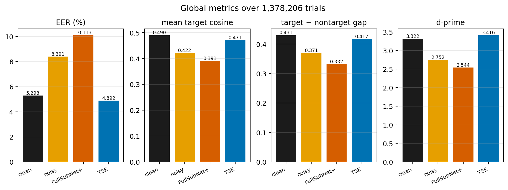
在 8,507 条测试句中，70.7% 被原方法拉低 target 分数；TSE 相对原方法恢复了 91.7%，相对 Noisy 恢复了 85.8%。原方法不是个别样本翻车，而是系统性地把 embedding 推向错误方向。
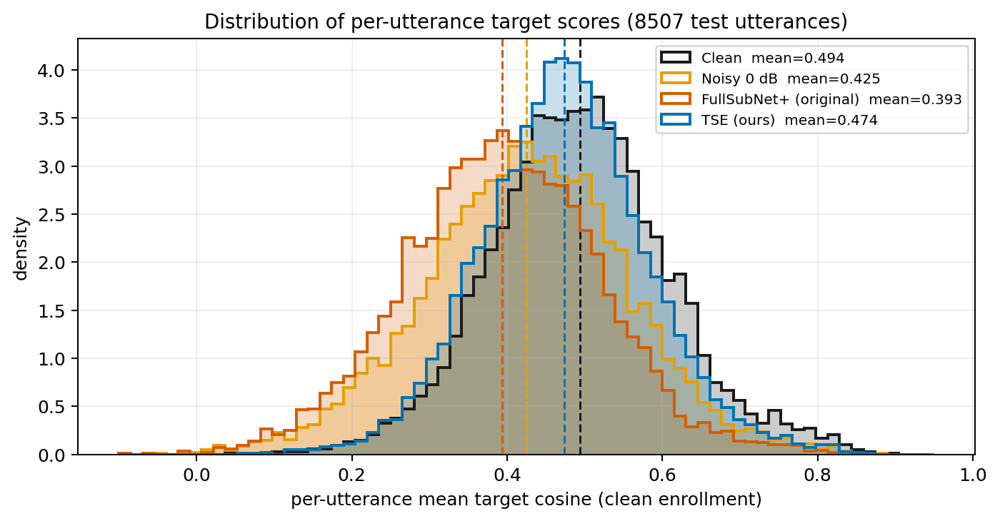
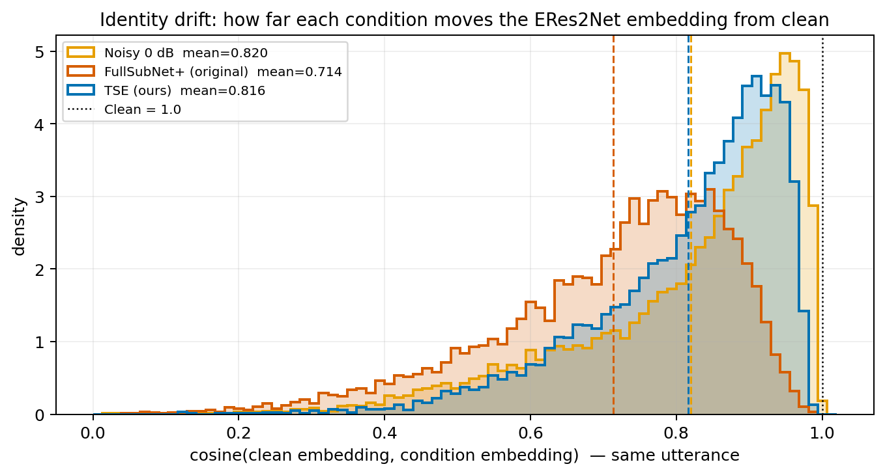
图 4-2 与图 4-3 是同一件事的两个视角：target 分数回答“像不像注册者”，漂移回答“增强把这句话挪了多远”。原方法在两个视角上都变差；TSE 的漂移与 Noisy 接近，但 target 明显更高，说明它把测试语音往“注册的这个人”方向拉，而不是简单复刻 clean。
| # | 测试语句 | Clean | Noisy | FullSubNet+ | TSE | 试听 |
|---|---|---|---|---|---|---|
| 1 | 3D_SPK_06975_005_Device03... | 0.662 | 0.534 | 0.173 | 0.593 | 文件夹 |
| 2 | 3D_SPK_06868_001_Device04... | 0.746 | 0.436 | 0.175 | 0.591 | 文件夹 |
| 3 | 3D_SPK_06979_001_Device02... | 0.603 | 0.460 | 0.148 | 0.499 | 文件夹 |
| 4 | 3D_SPK_06811_006_Device04... | 0.637 | 0.415 | 0.136 | 0.494 | 文件夹 |
| 5 | 3D_SPK_06182_009_Device03... | 0.570 | 0.441 | 0.157 | 0.494 | 文件夹 |
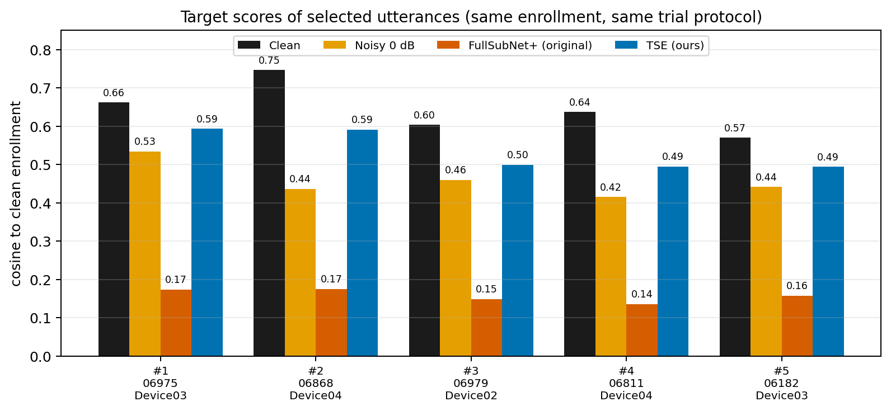
这 5 条的信号指标同样值得注意：原方法的 SI-SDRi / VAD-SNRi / ΔPESQ / ΔSTOI 往往比 TSE 更好，但 target 更低。例如样本 1：原方法 +4.23 / +2.36 / +0.119 / +0.182，target 0.173；TSE +3.44 / +1.28 / +0.095 / +0.107，target 0.593。逐句数据见 data/selected_intrusive_metrics.csv。
| 条件 | SI-SDR (dB) | VAD 分段 SNR (dB) | PESQ-WB | STOI |
|---|---|---|---|---|
| Clean（参考） | — | — | 4.644 | 1.000 |
| Noisy 0 dB | −0.52 | 5.03 | 1.305 | 0.654 |
| FullSubNet+（原） | 8.07 | 20.69 | 1.889 | 0.750 |
| TSE（现有） | 7.09 | 13.43 | 1.958 | 0.739 |
| 条件 | SI-SDRi (dB) | VAD-SNR 提升 (dB) | ΔPESQ | ΔSTOI |
|---|---|---|---|---|
| FullSubNet+（原） | +8.59 | +15.67 | +0.584 | +0.096 |
| TSE（现有） | +7.62 | +8.40 | +0.653 | +0.085 |
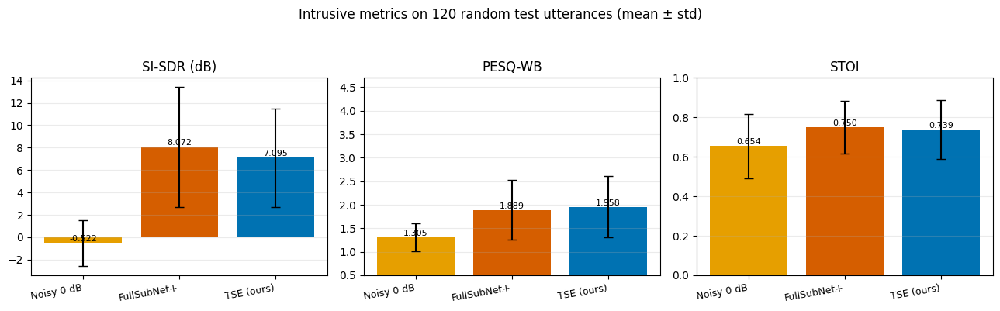
逐句改善比例：原方法 PESQ 85.8%、STOI 87.5%、SI-SDR 95.8%、VAD-SNR 99.2%；TSE 分别为 99.2%、95.0%、96.7%、95.0%。TSE 在 PESQ 上更稳定，但均值上原方法在 SI-SDR/SNR/STOI 更高。原方法更像“更好的降噪器”，但不是“更好的声纹前端”。
| 输入 SNR | 20 dB | 10 dB | 5 dB | 0 dB | −5 dB | Clean |
|---|---|---|---|---|---|---|
| PESQ-WB | 3.18 | 2.15 | 1.69 | 1.32 | 1.19 | 4.644 |
| STOI | 0.925 | 0.832 | 0.762 | 0.660 | 0.593 | 1.000 |
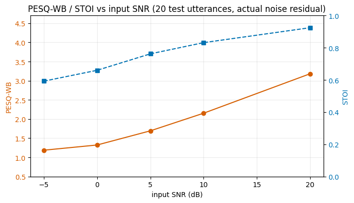
按 3.3 的“与输入同电平”口径：把每个条件的输出缩放到与带噪输入相同的整体 RMS，再算相对 clean 的残差 SNR；带噪基线就是它原本的输入 SNR。
| 数据 | Noisy | FullSubNet+ | Δ vs Noisy | TSE | Δ vs Noisy |
|---|---|---|---|---|---|
| 0 dB | 0.16 | 3.96 | +3.80 | 3.48 | +3.32 |
| −5 dB | −4.53 | −1.37 | +3.16 | −1.96 | +2.57 |
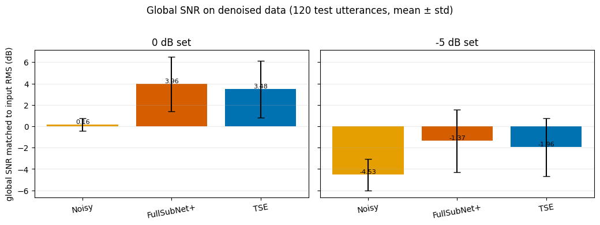
作为对照：0 dB 下 SI-SDR 从 −0.52 到 8.07（原方法，+8.59）/ 7.09（TSE，+7.62）；VAD-SNR 从 5.03 到 20.69（+15.67）/ 13.43（+8.40）。三个数字不同不是矛盾，而是三个口径。
| 条件（120 条，0 dB） | low 20–500 Hz | mid 0.5–2 kHz | high 2–7.6 kHz | 谱倾斜 | RMS 增益 | SI-SDR | shape RMSE | 平均 dB 差 |
|---|---|---|---|---|---|---|---|---|
| Clean | 0.692 | 0.281 | 0.027 | −25.1 | −33.5 dBFS | — | — | — |
| Noisy | 0.549 | 0.285 | 0.166 | −18.9 | +2.6 dB | −0.52 | 3.97 | +1.35 |
| FullSubNet+（原） | 0.682 | 0.300 | 0.018 | −28.2 | +19.7 dB | 8.07 | 7.19 | +15.42 |
| TSE（现有） | 0.600 | 0.364 | 0.036 | −22.2 | −4.4 dB | 7.09 | 3.89 | −4.29 |
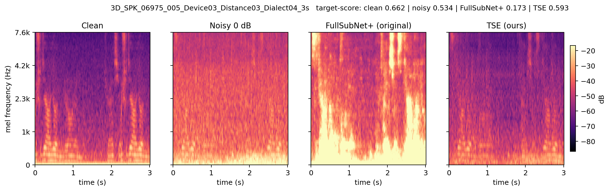
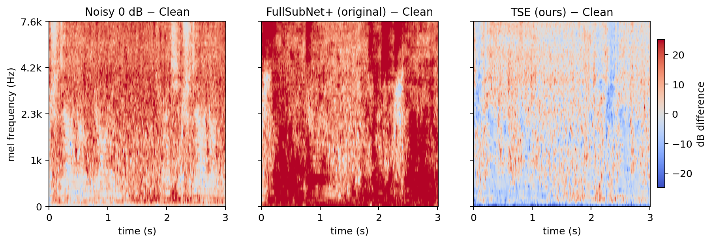
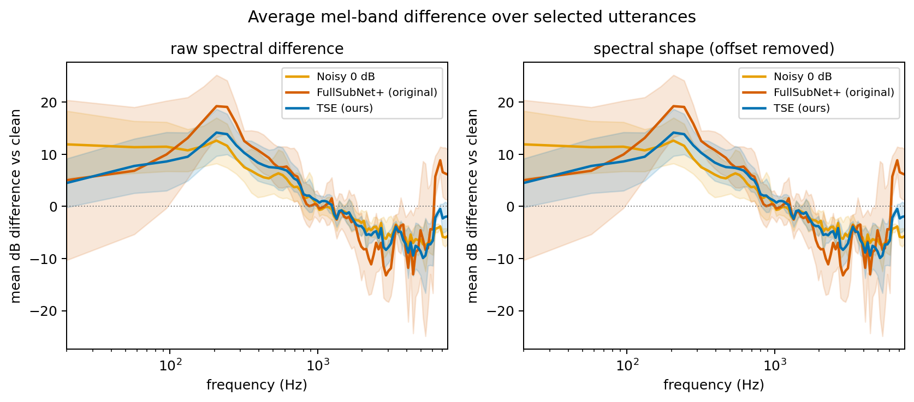
原方法把 high 频带能量占比从 Noisy 的 0.166 压到 0.018（clean 0.027），谱倾斜从 −18.9 变到 −28.2，shape RMSE 达到 7.19 dB（TSE 3.89 dB）。高频共振峰、辅音细节和精细谱包络正是声纹模型依赖的线索；这些被改写后，embedding 就会漂。谱形畸变与 embedding 漂移的相关系数为 −0.54（360 个“语句×条件”点），而 SI-SDR 与漂移只有 +0.13——坏在谱形，不在残余噪声。
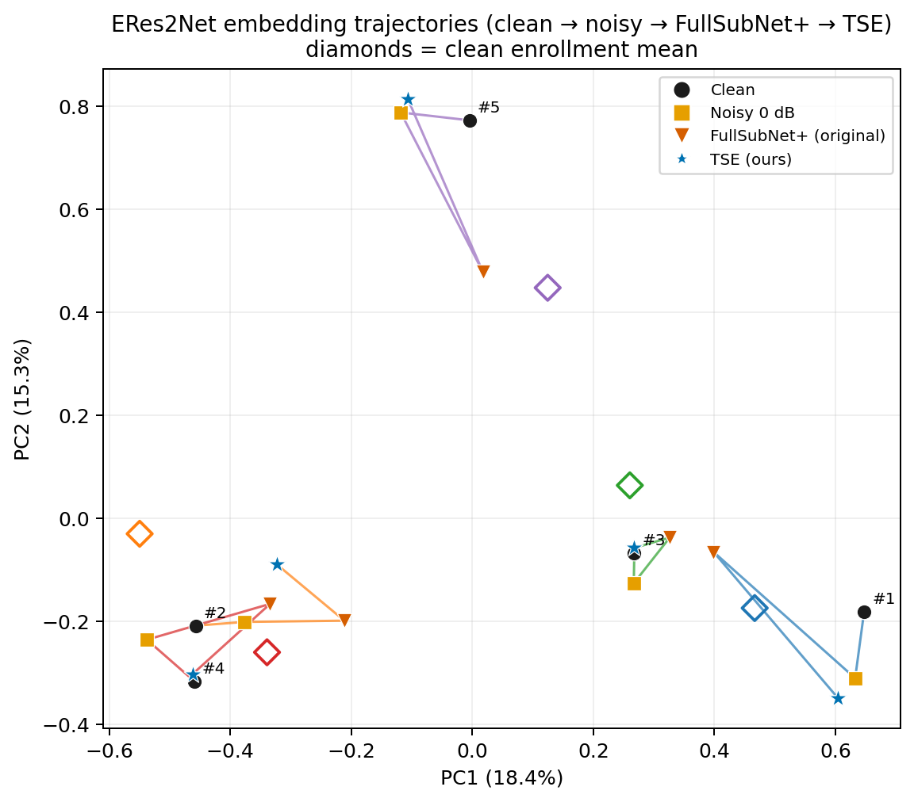
PCA 图只有 5 条样本，是示意性的，但与 8,507 条统计一致。注意 TSE 的 cos 到 clean 只有 0.816，和 Noisy 的 0.820 接近；但 TSE 的 target 更高（0.471 vs 0.422）。它不是“更像 clean 的录音”，而是“更像注册的这个人”——这是注册条件化的本质。
原报告已经给出了 TSE 的网络结构、FiLM 注入与四项损失；本节不重复模型介绍，只解释“为什么通用降噪会让声纹变差”，以及 TSE 为什么能避开这个问题。
| 环节 | 观察 | 解释 |
|---|---|---|
| ① 目标函数 | FullSubNet+ 优化 cIRM/信号重建，训练分布是 DNS 类通用数据；没有注册条件。 | 它优化“增强信号像 clean”，不优化“增强后仍像同一个人”；也不知道要保留谁。 |
| ② 频谱行为 | high 频带占比 0.166 → 0.018；谱倾斜 −18.9 → −28.2；shape RMSE 7.19 dB；输出峰值归一化到 0.8。 | 高频目标语音细节被过度压制，低频/宽带能量被抬升；增益和伪影进一步改变谱包络。 |
| ③ embedding | 同句 cos 到 clean：0.820 → 0.714；target 0.422 → 0.391；gap 0.371 → 0.332；d′ 2.752 → 2.544。 | ERes2Net 依赖的精细谱结构被改写，embedding 离开说话人流形；注册相似度和类间可分性同时下降。 |
| ④ 系统结果 | EER 8.391% → 10.113%，比不处理还差 1.72pp。 | 波形/感知指标可以更好，但验证指标由 embedding 决定，所以“降噪更好”没有转化为“声纹更好”。 |
这条链的关键是 ②→③：如果只看波形，原方法确实更接近 clean（SI-SDR 8.07 dB、VAD-SNR 20.69 dB、STOI 0.750）；但 ERes2Net 不直接“看波形”，它看的是 FBank 的精细谱包络。谱形被改写后，embedding 漂移比“完全不处理”还大。这也是为什么“降噪指标”和“声纹指标”会背离。
TSE 的 FiLM 结构、四项损失、消融链与训练细节见原报告第 5 章；本报告只保留“它为什么能改善声纹”这条因果链。
本 PDF 是结论与图的静态版本；如果看完想听声音、看原始图或查更多数字，按下面索引去对应文件。所有路径以 E:\china_mobile_review\声纹特征对比\ 为根目录。
| 我想… | 打开/查看 | 说明 |
|---|---|---|
| 边听边看结论 | listen.html | 交互式 HTML：5 条样本四路音频、时频图、target 分数、全部关键图。 |
| 看正式补充报告 | 本 PDF | 你正在看的文件；指标公式、定量结果、查看指南。 |
| 看原报告 | 原技术报告《多条件中文声纹识别与噪声鲁棒性增强》 | 任务/数据/协议/TSE 结构/主 EER 大表；本补充不重复。 |
| 看文字版 | 分析报告.md | Markdown 版本，便于复制到论文/笔记。 |
最快的方式是打开 listen.html；每条样本都有 Clean / Noisy / FullSubNet+ / TSE 四个播放器。也可以进入下表文件夹，四个文件就是四路音频。试听副本在 wav_listen/（统一到 −23 dBFS RMS，避免原 FullSubNet+ 峰值归一化导致“听起来更响”的错觉）；原始响度在 wav/。
| # | 样本 | 试听文件夹 | 四个文件名 |
|---|---|---|---|
| 1 | 06975_005 | wav_listen/…06975_005… | clean.wav / noisy_0db.wav / fullsubnetplus.wav / tse.wav |
| 2 | 06868_001 | wav_listen/…06868_001… | 同上 + enroll_1.wav |
| 3 | 06979_001 | wav_listen/…06979_001… | 同上 + enroll_1.wav |
| 4 | 06811_006 | wav_listen/…06811_006… | 同上 + enroll_1/2.wav |
| 5 | 06182_009 | wav_listen/…06182_009… | 同上 + enroll_1/2.wav |
| 图 | 文件 | 看什么 |
|---|---|---|
| 四联总图 | metrics_summary.png | EER、target、gap、d′ 一页看完。 |
| target 分布 | target_score_distributions.png | 8,507 条逐句 target 分数；原方法整体左移。 |
| embedding 漂移 | cos_to_clean_distributions.png | 同句 clean vs 各条件 embedding 的余弦；原方法 0.714。 |
| 5 条样本分数 | target_scores_selected.png | 5 条样本四路 target 分数。 |
| SI-SDR/PESQ/STOI | intrusive_metrics.png | 120 条随机样本的三项均值±标准差。 |
| PESQ vs SNR | pesq_vs_snr.png | 解释 0 dB 下 PESQ 为什么只有 ~1.3。 |
| 降噪后全局 SNR | global_snr_inputmatched.png | 0/−5 dB 下 Noisy/原方法/TSE 的全局 SNR。 |
| 时频图（样本 1） | spectrogram_…06975_005….png | 四路 log-mel 对比。 |
| 时频差（样本 1） | spectrogram_diff_…06975_005….png | Noisy/原方法/TSE 分别减 clean。 |
| 频带差 | mel_band_diff.png | 120 条样本的平均频带差；原方法低频抬升、高频压低。 |
| embedding 轨迹 | embedding_pca.png | PCA 轨迹；原方法红三角偏离，TSE 蓝星靠近。 |
| 其余 4 条时频图 | figs/ 文件夹 | spectrogram_3D_SPK_06182… / 06811… / 06868… / 06979… |
| 文件 | 规模 | 内容 |
|---|---|---|
| data/per_utt_scores.csv | 8,507 行 | 逐句 clean/noisy/原方法/TSE 的 target 分数、漂移、注册 ID。 |
| data/intrusive_metrics.csv | 120×3 行 | SI-SDR、VAD-SNR、PESQ、STOI 及相对 Noisy 的提升。 |
| data/global_snr_inputmatched.csv | 120×3×2 行 | 0/−5 dB 下与输入同电平的全局 SNR 与 ΔSNR。 |
| data/audio_features.csv | 120×3 行 | 频带占比、谱倾斜、RMS 增益、shape RMSE、SI-SDR。 |
| data/selected_intrusive_metrics.csv | 5×3 行 | 5 条展示样本的逐句信号/感知指标。 |
| data/summary.json | — | 8507 条全局指标、阈值、选样信息。 |
| data/intrusive_metrics_summary.json | — | SI-SDR/SNR/PESQ/STOI 的均值/中位数/改善比例。 |
| data/global_snr_inputmatched_summary.json | — | 0/−5 dB 全局 SNR 的均值/中位数/标准差。 |
| data/pesq_snr_sweep.csv | 20×6 行 | 20/10/5/0/−5 dB 的 PESQ/STOI 扫描。 |
| data/selected_embeddings.npz | 5×4×512 | 5 条样本四路 embedding + 注册均值（numpy npz）。 |
| 脚本 | 作用 |
|---|---|
| sv_analyze.py | 1,378,206 trial 分数、EER、target/gap/d′、embedding 漂移、选样。 |
| sv_figs.py | 样本 wav、时频图、差异图、PCA、分数分布图。 |
| sv_audio_features.py | 120 条随机样本的频带/谱倾斜/shape RMSE/相关性。 |
| sv_intrusive_metrics.py | 120 条随机样本的 SI-SDR / VAD-SNR / PESQ / STOI。 |
| global_snr_denoised.py | 降噪后全局 SNR（raw / active-RMS / SI-SDR 三种口径）。 |
| global_snr_inputmatched.py | 降噪后全局 SNR（与输入同电平，主表口径）。 |
| snr_definitions.py | 0/−5 dB 数据的全局 SNR、SI-SDR、VAD-SNR 对照。 |
| pesq_snr_sweep.py | PESQ/STOI 随输入 SNR 的扫描。 |
服务器端：ligangrui@10.20.1.95:/home/ligangrui/china_mobile/AI/10.17/；Python 环境 /home/ligangrui/china_mobile/zhangqiyuan/bin/python。原方法 checkpoint AI/8.17/models/best_model.tar；TSE checkpoint AI/8.27/exp/tse_v3_ns05duraug_r5/checkpoint_best.tar。所有指标都直接从原始增强 wav 与官方 embedding 计算，没有重训。
| 问题 | 建议回答（带数字/口径） |
|---|---|
| 为什么通用降噪后 EER 反而变差？ | 它优化 cIRM/信号重建，不是说话人身份。0 dB 下 SI-SDRi +8.59 dB、STOI +0.096，确实更干净；但同句 embedding 到 clean 的余弦只有 0.714（Noisy 0.820），target 0.391（0.422），gap 0.332（0.371），d′ 2.544（2.752）。波形更接近 clean，embedding 却被推离了说话人流形。 |
| 怎么证明是声纹特征被破坏，而不是噪声没降干净？ | ① 它的 SI-SDR/VAD-SNR/STOI 都比 Noisy 和 TSE 高（或部分更高），不是“没降噪”；② 谱形畸变（shape RMSE 7.19 dB）与 embedding 漂移的相关系数是 −0.54（360 个语句×条件点），而 SI-SDR 与漂移只有 +0.13。坏的中间量是谱形/embedding，不是残余噪声。 |
| TSE 为什么能改善？ | 注册 embedding 经 FiLM 注入，让增强知道保留谁；说话人保持损失约束增强前后 embedding 余弦；难负原型抑制增大 target 与 hard negative 的间隔。结果 target 0.471、gap 0.418、d′ 3.416、EER 4.89%，都优于原方法和 Noisy。它不是复刻 clean：cos 到 clean 0.816 与 Noisy 0.820 接近，但 cos 到注册语音更高。 |
| SNR 提升了多少？ | 先说口径。① 全局 SNR（输出缩放到与输入同 RMS）：0 dB 下原方法 0.16→3.96（+3.80 dB），TSE 0.16→3.48（+3.32 dB）；−5 dB 下 −4.53→−1.37（+3.16）/ −1.96（+2.57）。② SI-SDRi（尺度不变）：+8.59 / +7.62 dB（0 dB），−5 dB +11.47 / +9.59 dB。③ VAD-SNRi（分段噪声底）：+15.67 / +8.40 dB（0 dB）。三个不是同一个量，不能相加或互换。 |
| PESQ 为什么只有 1.9？ | 测试是 0 dB，PESQ 是全参考、非线性指标，4.644 只对 clean-vs-clean 成立。用实际噪声扫 SNR：20 dB→3.18、10 dB→2.15、5 dB→1.69、0 dB→1.32、−5 dB→1.19；实际 noisy PESQ 1.333，与 0 dB 点吻合。1.9 已经是 0 dB 下的合理提升，不能和 clean 的 4.6 做百分比。 |
| claim 口径怎么样？ | 本报告和交付主表是 oracle 口径（真实说话人注册），4.89% 是验收上限；claim 口径（冒认句用声称者注册条件）存在条件信息泄漏，EER 会反弹，不能直接外推到部署。完整分析见原报告附录 C（部署口径与局限性）。 |
| 用途 | 路径 |
|---|---|
| 原方法 checkpoint | AI/8.17/models/best_model.tar |
| 原方法增强 wav（0 dB） | .../sv-ecapa/data/data_for_test/denoised/noise_0db/enhanced_0194/ |
| 原方法 embedding（0 dB） | .../sv-ecapa/exp/clean_bench/denoised_noise_0db/eres2net/embeddings_3s/ |
| TSE checkpoint | AI/8.27/exp/tse_v3_ns05duraug_r5/checkpoint_best.tar |
| TSE 增强 wav（0 dB / −5 dB） | AI/8.27/exp/tse_v3_ns05duraug_r5/enhanced_official/noise_0db|noise_m5db/ |
| TSE embedding / EER（0 dB / −5 dB） | AI/8.28/final_eval_r5/r5_eres_noise_0db_3s|r5_eres_noise_m5db_3s/ |
| 项目 | 设置 |
|---|---|
| 随机子集 | 120 条测试语音，随机种子 2026 |
| 展示样本 | 5 条：06975_005、06868_001、06979_001、06811_006、06182_009 |
| VAD 分段 | 帧长 512、帧移 256；clean 能量最高 60% 为语音帧、最低 20% 为噪声帧 |
| SI-SDR / 全局 SNR | 先对齐（cross-correlation，最大 800 样点）；SI-SDR 用最优 α；全局 SNR 用输入整体 RMS 匹配 |
| PESQ / STOI | 官方 pesq 0.0.4（wb，16 kHz）；pystoi 0.4.1（extended=False） |
原报告的 3D-Speaker 数据、clean 注册、1,378,206 条 trial、ERes2Net-large 后端与 EER/minDCF 定义不在本附录重复，见原报告第 2–3 章。
复现：服务器 ligangrui@10.20.1.95:/home/ligangrui/china_mobile/AI/10.17/；Python /home/ligangrui/china_mobile/zhangqiyuan/bin/python；脚本见 6.5；本 PDF 由 build_supplement_report.py 生成。
原报告的 3D-Speaker、ERes2Net、FullSubNet+、FiLM 与 TSE 相关工作引用见原报告参考文献；本附录只列本补充新增的指标/机理参考。